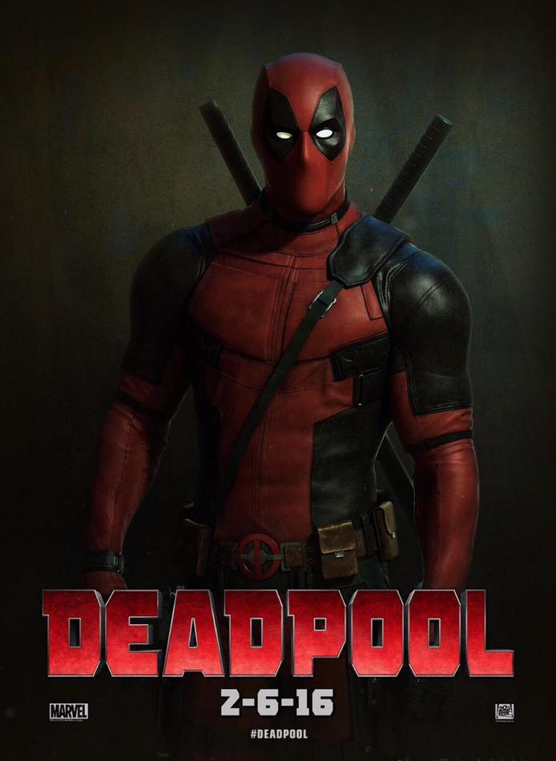
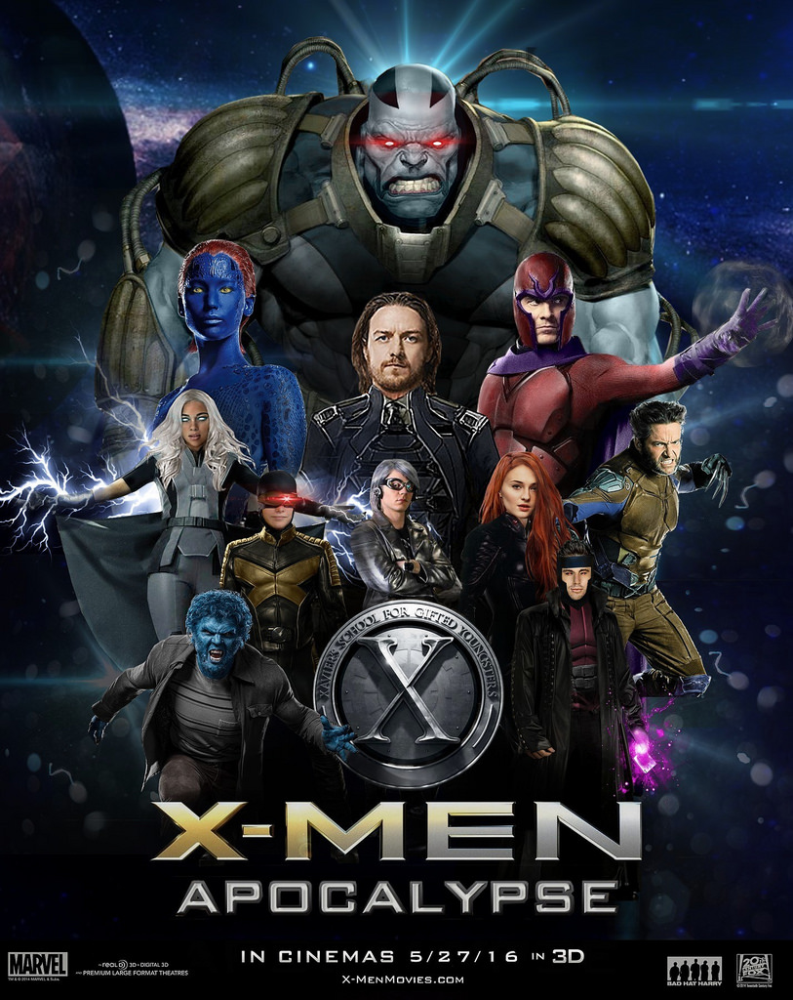
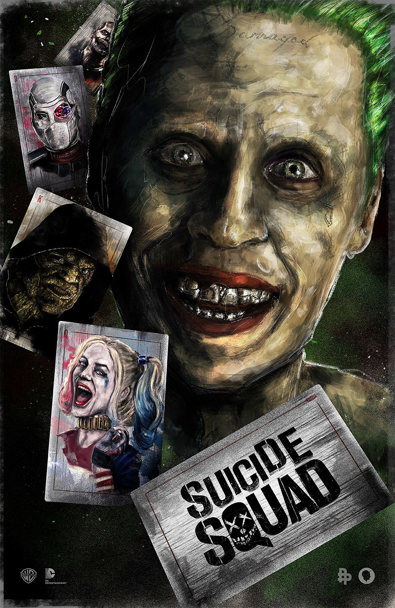

2016 Promete!
Deadpool

04 de Fevereiro
Sinopse
04 de Fevereiro
Sinopse
O mercenário Wade Wilson (Ryan Reynolds) é um anti-herói do universo Marvel, conhecido como Deadpool. Depois de ser submetido a um experimento para ganhar fator de cura, o mercenário tagarela, armado com suas habilidades e um senso de humor negro, vai atrás do homem que quase destruiu sua vida.
Batman vs Superman

24 de Março
Sinopse
24 de Março
Sinopse
Temendo as descontroladas ações de um super-herói quase Deus, o forte e formidável vigilante de Gotham City assume o papel do reverenciado salvador de Metrópolis, enquanto o luta para decidir qual tipo de herói que realmente precisa. E enquanto Batman e Superman estão em guerra, uma nova ameaça surge rapidamente, colocando a humanidade em um perigo nunca antes conhecido.
Xmen Apocalipse

27 de Maio
Sinopse
27 de Maio
Sinopse
Apocalipse se passa uma década depois de Dias de um Futuro Esquecido e é uma próxima etapa na história. A alteração de tempo desencadeou um novo, único e poderoso inimigo. Charles (James McAvoy), Erik (Michael Fassbender), Raven (Jennifer Lawrence), Wolverine (Hugh Jackman) e Hank (Nicholas Hoult) são unidos pelos jovens Ciclope, Tempestade, Jean para que os X-Men lutem contra o inimigo mais poderoso que já enfrentaram – uma força ancestral implacável, determinada a causar um apocalipse, à qualquer custo, na história da humanidade
Esquadrão Suicida

04 de Agosto
Sinopse
04 de Agosto
Sinopse
Baseado nas histórias em quadrinhos da DC Comics, o Esquadrão Suicida surge quando o governo dos Estados Unidos reúne um grupo de supervilões condenados pela justiça que recebem a tarefa de realizar missões consideradas impossíveis (ou "suicidas") para o governo em troca da redução de suas sentenças.